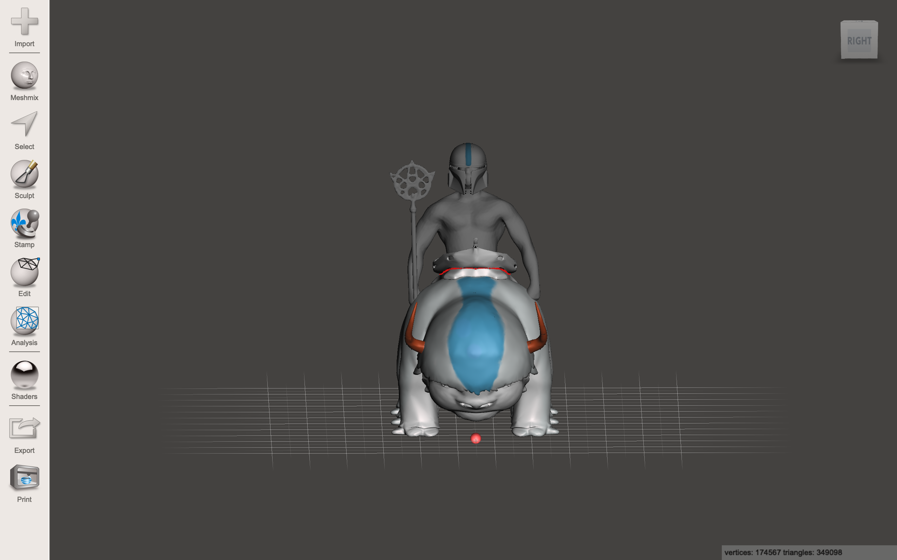
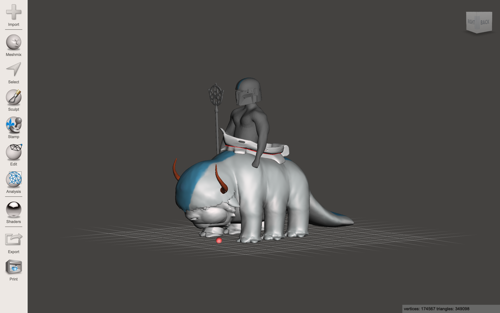

<!DOCTYPE html>
<html lang="en">
<head>
  <title>Haleigh Bei </title>

  <meta charset="utf-8">
  <meta name="viewport" content="width=device-width, initial-scale=1">
  <link rel="stylesheet" href="https://maxcdn.bootstrapcdn.com/bootstrap/4.4.1/css/bootstrap.min.css">
  <script src="https://ajax.googleapis.com/ajax/libs/jquery/3.4.1/jquery.min.js"></script>
  <script src="https://cdnjs.cloudflare.com/ajax/libs/popper.js/1.16.0/umd/popper.min.js"></script>
  <script src="https://maxcdn.bootstrapcdn.com/bootstrap/4.4.1/js/bootstrap.min.js"></script>


</body>
</html>


</head>
<body>

<div class="jumbotron text-center" style="margin-bottom:0">
  <h1>Haleigh Bei</h1>
  <p>Experience the View Through the Finder</p> 
</div>


<!-- navigation -->

<nav class="navbar navbar-expand-sm bg-dark navbar-dark">
  <a class="navbar-brand" href="index.html">Menu</a>
  <button class="navbar-toggler" type="button" data-toggle="collapse" data-target="#collapsibleNavbar">
    <span class="navbar-toggler-icon"></span>
  </button>
  <div class="collapse navbar-collapse" id="collapsibleNavbar">
    <ul class="navbar-nav">
      <li class="nav-item">
        <a class="nav-link" href="#">Works</a>
      </li>
      <li class="nav-item">
        <a class="nav-link" href="photos.html">Net.Art</a>
      </li> 
      <li class="nav-item">
        <a class="nav-link" href="about.html">Artist Statement</a>
      </li>
      <li class="nav-item">
        <a class="nav-link" href="social.html">Social/Contact</a>
      </li>   

    </ul>
  </div>  
</nav>

<div class="container" style="margin-top:30px">
  <div class="row">
    <div class="col-sm-4">
      <h2>About the Artist</h2>
      

      <p>Student at San Jose State University. Majoring in a Concentration in Photography. Has been interning with the SJSU Athletic and Football Department as a Sports Photographer.</p>
    </div>


    <div class="col-sm-8">
      <h2>What is New Media Art?</h2>
      <h5>Writing Response, Feb, 2020</h5>
      <a href="http://transfergallery.com"> Alma Alloro </a>
      <a href="http://transfergallery.com"> Laturbo Avedon</a>
      <a href="http://transfergallery.com"> Rick Silva</a>
      
      <p></p>
      
     <a href="What is new media art.pdf" target=" "> Document</a>

      <p>This assignment was mostly about finding three artist that we believe represent or create New Media Art. We had to explain the artist works and talk about why we think they are a good example of what new media art is.</p>
      <br>
      
      <h2>Digital Image Composite</h2>
      <h5>Photoshop, Feb, 2020</h5>
      
      <!-- Image -->

    
      <a href="Photoshop"></a>
      

      <p>This was my digital image assignment for Art 74</p>
      <p>Title: Vaction Gone Wrong 

      <p> This was my first time doing anything like this in photoshop, so for this to be my end result im pretty proud of myself. I didn't really have a set idea of what I wanted to go for. The background image was a photograph that I actually took while I was in Maui, and soon decided to add some images onto of that to make it look more interesting. One thing I learned how to do was, how to fade an image or a selected part of something in photoshop which helped me make the dinasours feet look like they were in the grass.</p>
      <br>
      
      


      <h2>Glitch Art</h2>
      <h5>Audacity/jpg to txt, Feb, 2020</h5>
      
      <!-- Image -->

      <a href="Glitchart1"></a>
      

      <a href="Glitchart2"></a>
      

      

      <p>For my glitch art, I chose a landscape image, not particular reason. I did the first one in audacity using the Invert effect. The other two I converted them into text and then back into jpeg. What  I did was, I copied data from somewhat of the top and pasted it farther down, then I copied a portion of the bottom data and pasted it further up. I did that for both photos and this is what happened when doing so. I thought all three came out really interesting. For me i personally enjoy converting the image into a text and messing with it from there rather than using audacity, probably because audacity can be complicated at times. Overall this assignment was fun to learn and wasnt too complicated. </p>


      <h2>Net.Art</h2>
      <h5>HTML/CSS, Feb, 2020</h5>
      <p>Check out images on the menu bar where is shows the Net.art tab</p>
      

      <p>This was my digital image assignment for Art 74</p>
      
      <p>For this assignment I created a page that showed the audience a trip I went on to Maui. I added images and videos of different adventures I went on during my trip.</p>


      <h2>3D Art Remix</h2>
      <h5>Meshmixer, March, 2020</h5>
      <p>Combining 3D renders together</p>
      

      <!-- Image -->

      <a href="3Dimage1"></a>
      

      <a href="3Dimage2"></a>
      

      <a href="3Dimage3"></a>
      

      <p>Narrative/Story for our 3D Remix Model</p>
      

      <p>There was once a time where avatars of all four elements were our protectors. When a major catastrophe happened many years ago, all avatars that we know of fled into despair. Years went by with no site of any avatars that may have stayed to protect the people. One day a couple of villagers went exploring around the mountains and found an old abandoned school for the avatars where they would learn each element to master. While exploring the avatar school the villagers came across this massive yet calming beast that resembled what the avatars use to fly on when they were alive. The villagers went up to this beast and soon realized that this is one of the beasts and that there has to be an avatar that is currently still alive. After roaming around some more they came across one of the last avatars that stayed back and survived. The only difference is that he looks a little different from when the other avatars were alive. He’s more of a warrior with the helmet and staff showing the power he has. He rides his beast off into the sky leaving the villagers behind hoping they will not disturb his home any longer. A few days went by with no sight of this avatar, but soon he will make an appearance claiming his spot once more as the protector of all elements and all of mankind. </p>


    </div>
  </div>
</div>

<div class="jumbotron text-center" style="margin-bottom:0">
  <p> Haleigh Bei Website 2020 Copyright</p>
</div>

</body>
</html>